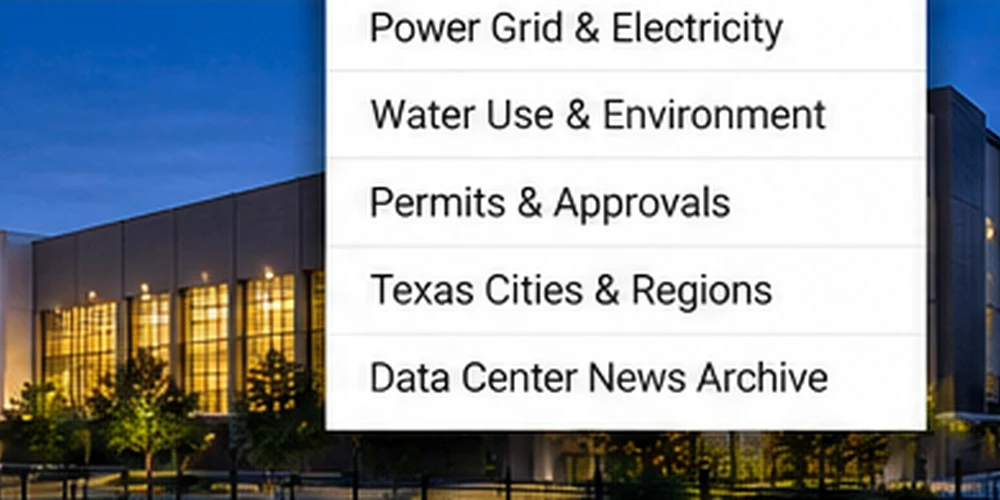

Why Texas Is Attracting Data Centers
Texas combines large metropolitan markets, connectivity and land availability, but power access is a critical constraint.
October 27, 2026 · Texas News Studio

AI-generated conceptual image; not a photograph of a specific facility.
Texas is a major destination for data center investment because operators need proximity to customers, fiber connections and locations where large campuses can be built. Dallas–Fort Worth has long been a major data center market, while projects are also proposed elsewhere in the state.
Data centers house servers and networking equipment that power cloud computing, online services and AI workloads. Their needs extend beyond real estate: they require reliable electric service, cooling systems, security and high-capacity telecommunications.
A proposed campus is not the same as an approved or operating facility. Announcements should be checked against local zoning decisions, utility interconnection progress, environmental permits and construction milestones.
For communities, the central questions are whether projected jobs and tax revenue outweigh costs for infrastructure, water and electricity. Texas News Studio will track those questions as individual projects move forward.
Editorial note: This background explainer does not report a newly approved project. Project-specific claims will require dated primary sources.